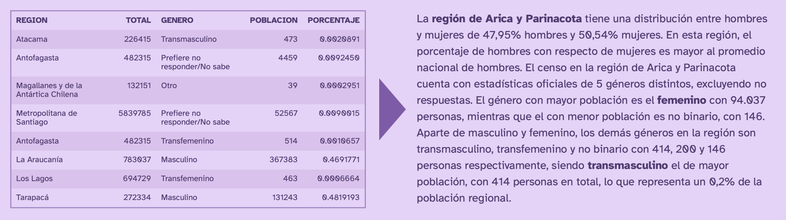

Redactar textos basados en datos automáticamente con R: describiendo resultados del censo de población
12/2/2026
Luego de explorar o procesar un conjunto de datos, toca presentar los resultados. Si bien esto nos hace pensar en gráficos, tablas o reportes, el texto también es una forma de comunicar resultados que puede ser optimizada mediante la programación.
En este tutorial veremos cómo hacer que R redacte párrafos de texto que se pueden adaptar a tus datos, ya sea adoptando la sintaxis y redacción apropiadas, integrando cifras, o escribiendo distintas oraciones de manera condicional a los resultados.

Empecemos con un conjunto de datos sociales: los resultados del Censo de población y vivienda 2024 de Chile, específicamente la población por género en cada región del país.
Ver código de la limpieza de los datos
library(dplyr)
library(janitor)
library(readxl)
library(tidyr)
# cargar
genero <- read_xlsx("P5_Genero.xlsx", sheet = 2)
# limpiar
genero_limpio <- genero |>
row_to_names(3) |>
filter(!is.na(Región))
# transformar a largo
genero_long <- genero_limpio |>
pivot_longer(cols = 4:last_col(),
names_to = "genero",
values_to = "poblacion") |>
rename(total = 3)
# convertir variables y calcular porcentajes
genero_porcentaje <- genero_long |>
mutate(poblacion = as.numeric(poblacion),
total = as.numeric(total)) |>
clean_names() |>
mutate(porcentaje = poblacion / total)
# filtrar
genero <- genero_porcentaje |>
filter(region != "País")
Luego de limpiar estos datos, vemos columnas con las regiones del país, la población regional, los distintos géneros consultados en el censo, la cantidad de personas y su porcentaje:
library(dplyr)
genero |>
filter(region == "Valparaíso")
# A tibble: 7 × 6
codigo_region region total genero poblacion porcentaje
<chr> <chr> <dbl> <chr> <dbl> <dbl>
1 5 Valparaíso 1505034 Masculino 704691 0.468
2 5 Valparaíso 1505034 Femenino 780209 0.518
3 5 Valparaíso 1505034 Transmasculino 3003 0.00200
4 5 Valparaíso 1505034 Transfemenino 1369 0.000910
5 5 Valparaíso 1505034 No binario 2161 0.00144
6 5 Valparaíso 1505034 Otro 624 0.000415
7 5 Valparaíso 1505034 Prefiere no responder/N… 12977 0.00862
Usando datos para generar texto
Empecemos filtrando un caso de una región específica y un género determinado:
genero_f <- genero |>
filter(region == "Valparaíso") |>
filter(genero == "No binario")
genero_f
# A tibble: 1 × 6
codigo_region region total genero poblacion porcentaje
<chr> <chr> <dbl> <chr> <dbl> <dbl>
1 5 Valparaíso 1505034 No binario 2161 0.00144
Sabemos que podemos extraer el texto o los valores de una tabla de datos con el operador $, y si tenemos una tabla de una sola fila ésto se vuelve muy conveniente:
genero_f$genero
[1] "No binario"
genero_f$poblacion
[1] 2161
Podemos usar esta técnica para redactar un párrafo simple.
La función glue() del paquete {glue} nos permite crear textos que contengan valores de objetos de R, simplemente abriendo paréntesis de llave ({ y }) con el código de R dentro:
library(glue)
glue("En la región de {genero_f$region} existen {genero_f$poblacion} personas de género {genero_f$genero}, que representan a un {genero_f$porcentaje * 100}% de la población regional.")
En la región de Valparaíso existen 2161 personas de género No binario, que representan a un 0.143584796090985% de la población regional.
✍🏼 Creamos una oración que adquiere sus valores desde la tabla de datos filtrada!
Por lo tanto, si filtramos la tabla de nuevo, obtendremos un texto que se ajuste a los nuevos datos:
# volver a filtrar datos
genero_f <- genero |>
filter(region == "Metropolitana de Santiago") |>
filter(genero == "Transfemenino")
# volver a redactar texto
glue("En la región de {genero_f$region} existen {genero_f$poblacion} personas de género {genero_f$genero}, que representan a un {genero_f$porcentaje * 100}% de la población regional.")
En la región de Metropolitana de Santiago existen 5838 personas de género Transfemenino, que representan a un 0.0999694338062103% de la población regional.
Mejoras para la generación de texto
Ahora podemos mejorar el texto generado usando algunas funciones que entregan formatos apropiados a las cifras y modifican otros textos.
El paquete {scales} cuenta con varias funciones para formatear valores. Primero definimos una configuración por defecto con number_options(), y luego usamos number() y percent() para formatear las cifras de población y porcentaje.
También usamos str_to_lower() de {stringr} para convertir el texto del género a minúscula.
library(scales)
number_options(big.mark = ".",
decimal.mark = ",")
n <- number(genero_f$poblacion) # números con puntos separadores de miles
p <- percent(genero_f$porcentaje, 0.01) # porcentaje con 2 decimales
library(stringr)
g <- str_to_lower(genero_f$genero) # texto a minúscula
# redactar texto mejorado
glue("En la región de {genero_f$region} existen {n} personas de género {g}, que representan a un {p} de la población regional.")
En la región de Metropolitana de Santiago existen 5.838 personas de género transfemenino, que representan a un 0,10% de la población regional.
Crear una función que redacte texto
Ahora que tenemos unas líneas de código que hacen lo que necesitamos, podemos ponerlas dentro de una función para poder utilizarla varias veces sin repetir tanto código.
Para crear la función, simplemente le damos un nombre y usamos function() para definir los argumentos que recibirá la función. En este caso, la función redactar_genero() recibe primero los datos, y luego el argumento region, que es la región para la que queremos filtrar los datos y redactar el texto.
redactar_genero <- function(genero, region) {
# filtrar la región y el género
genero_f <- genero |>
filter(region == {{region}}) |>
filter(genero == "No binario")
# formatear cifras y valores
n <- number(genero_f$poblacion)
p <- percent(genero_f$porcentaje, 0.01)
g <- str_to_lower(genero_f$genero)
# elegir artículo según la región
art <- recode_values(genero_f$region,
"Biobío" ~ "del",
"Metropolitana de Santiago" ~ "",
"Libertador General Bernardo O'Higgins" ~ "del",
"Maule" ~ "del",
default = "de")
# redactar texto
glue("En la **región {art} {genero_f$region}** existen {n} personas de **género {g}**, que representan a un {p} de la población regional.")
}
Abre que tenemos la función, simplemente la aplicamos a la región que deseamos:
redactar_genero(genero, "Valparaíso")
En la **región de Valparaíso** existen 2.161 personas de **género no binario**, que representan a un 0,14% de la población regional.
redactar_genero(genero, "Metropolitana de Santiago")
En la **región Metropolitana de Santiago** existen 8.230 personas de **género no binario**, que representan a un 0,14% de la población regional.
Redactar texto en serie usando loops
El mismo código que usamos arriba, ya sea como líneas de código o como una función, puede ser usado dentro de un loop para generar múltiples veces textos que se adaptan a distintos datos.
En este caso crearemos un loop con {purrr} y la función map(), que primera recibe un vector con los elementos que queremos repetir, y la función que le aplicaremos a cada uno de los elementos:
library(purrr)
regiones <- unique(genero$region)
textos <- map(regiones,
~redactar_genero(genero, .x)
)
Recibimos como resultado una lista con todos los textos para cada uno de los valores que pusimos en el loop.
En la región de Arica y Parinacota existen 146 personas de género no binario, que representan a un 0,08% de la población regional.
En la región de Tarapacá existen 203 personas de género no binario, que representan a un 0,07% de la población regional.
En la región de Antofagasta existen 314 personas de género no binario, que representan a un 0,07% de la población regional.
En la región de Atacama existen 121 personas de género no binario, que representan a un 0,05% de la población regional.
En la región de Coquimbo existen 508 personas de género no binario, que representan a un 0,08% de la población regional.
En la región de Valparaíso existen 2.161 personas de género no binario, que representan a un 0,14% de la población regional.
En la región Metropolitana de Santiago existen 8.230 personas de género no binario, que representan a un 0,14% de la población regional.
En la región del Libertador General Bernardo O'Higgins existen 474 personas de género no binario, que representan a un 0,06% de la población regional.
En la región del Maule existen 438 personas de género no binario, que representan a un 0,05% de la población regional.
En la región de Ñuble existen 181 personas de género no binario, que representan a un 0,04% de la población regional.
En la región del Biobío existen 1.016 personas de género no binario, que representan a un 0,08% de la población regional.
En la región de La Araucanía existen 533 personas de género no binario, que representan a un 0,07% de la población regional.
En la región de Los Ríos existen 388 personas de género no binario, que representan a un 0,12% de la población regional.
En la región de Los Lagos existen 458 personas de género no binario, que representan a un 0,07% de la población regional.
En la región de Aysén del General Carlos Ibáñez del Campo existen 81 personas de género no binario, que representan a un 0,11% de la población regional.
En la región de Magallanes y de la Antártica Chilena existen 143 personas de género no binario, que representan a un 0,11% de la población regional.
Otras formas de imprimir los resultados
Algunas formas de obtener estos resultados son simplemente imprimiendo la lista, o usando cat() para imprimir cada texto en una nueva línea, y así poder copiarlos y pegarlos en otro programa:
textos |>
unlist() |>
cat(sep = "\n\n")
En la **región de Arica y Parinacota** existen 146 personas de **género no binario**, que representan a un 0,08% de la población regional.
En la **región de Tarapacá** existen 203 personas de **género no binario**, que representan a un 0,07% de la población regional.
En la **región de Antofagasta** existen 314 personas de **género no binario**, que representan a un 0,07% de la población regional.
En la **región de Atacama** existen 121 personas de **género no binario**, que representan a un 0,05% de la población regional.
En la **región de Coquimbo** existen 508 personas de **género no binario**, que representan a un 0,08% de la población regional.
En la **región de Valparaíso** existen 2.161 personas de **género no binario**, que representan a un 0,14% de la población regional.
En la **región Metropolitana de Santiago** existen 8.230 personas de **género no binario**, que representan a un 0,14% de la población regional.
En la **región del Libertador General Bernardo O'Higgins** existen 474 personas de **género no binario**, que representan a un 0,06% de la población regional.
En la **región del Maule** existen 438 personas de **género no binario**, que representan a un 0,05% de la población regional.
En la **región de Ñuble** existen 181 personas de **género no binario**, que representan a un 0,04% de la población regional.
En la **región del Biobío** existen 1.016 personas de **género no binario**, que representan a un 0,08% de la población regional.
En la **región de La Araucanía** existen 533 personas de **género no binario**, que representan a un 0,07% de la población regional.
En la **región de Los Ríos** existen 388 personas de **género no binario**, que representan a un 0,12% de la población regional.
En la **región de Los Lagos** existen 458 personas de **género no binario**, que representan a un 0,07% de la población regional.
En la **región de Aysén del General Carlos Ibáñez del Campo** existen 81 personas de **género no binario**, que representan a un 0,11% de la población regional.
En la **región de Magallanes y de la Antártica Chilena** existen 143 personas de **género no binario**, que representan a un 0,11% de la población regional.
Redactar textos para grupos de observaciones
En el ejemplo anterior hicimos que R redacte texto extraído de una sola fila de una tabla; es decir, de una sola observación. Ahora veremos cómo redactar texto que considere los valores de varias filas de datos a la vez.
Por ejemplo, veamos cómo redactar un texto que nos resuma los resultados del Censo en una región completa, considerando los valores mayores y menores, entre otros datos.
genero_r <- genero |>
filter(region == "Coquimbo") |>
filter(genero != "Prefiere no responder/No sabe",
genero != "Otro") |>
arrange(desc(poblacion))
genero_r
# A tibble: 5 × 6
codigo_region region total genero poblacion porcentaje
<chr> <chr> <dbl> <chr> <dbl> <dbl>
1 4 Coquimbo 643271 Femenino 331448 0.515
2 4 Coquimbo 643271 Masculino 304470 0.473
3 4 Coquimbo 643271 Transmasculino 1446 0.00225
4 4 Coquimbo 643271 Transfemenino 594 0.000923
5 4 Coquimbo 643271 No binario 508 0.000790
Luego de filtrar los datos para un grupo de observaciones, nos encontramos con datos para cinco filas.
Primero obtenemos el valor del grupo filtrado, en este caso la región, y luego podemos filtrar observaciones clave que queramos destacar en el texto; en este caso, los géneros binarios que son mayoría:
region <- genero_r$region[1]
genero_masc <- genero_r |>
filter(genero == "Masculino")
genero_fem <- genero_r |>
filter(genero == "Femenino")
texto_general <- glue("La región de {region} tiene una distribución entre hombres y mujeres de {percent(genero_masc$porcentaje)} hombres y {percent(genero_fem$porcentaje)} mujeres.")
texto_general
La región de Coquimbo tiene una distribución entre hombres y mujeres de 47% hombres y 52% mujeres.
Textos condicionales según datos
Dado que en el párrafo anterior nos encontramos con porcentajes que varían muy poco, agregaremos un texto donde se compare un valor específico con un valor, generando un texto condicional en base a los datos.
En este caso, escribimos un texto que explica si el porcentaje de hombres en una región es mayor al promedio de hombres en el país.
# calcular promedio de hombres a nivel nacional
promedio <- genero |>
summarize(total = sum(poblacion), .by = genero) |>
mutate(porcentaje = total / sum(total)) |>
filter(genero == "Masculino") |>
pull(porcentaje)
comparacion <- if_else(genero_masc$porcentaje >= promedio,
"mayor",
"menor")
texto_promedio <- glue("El porcentaje de hombres con respecto de mujeres es {comparacion} al promedio nacional de hombres.")
En el código anterior, si el valor de la observación supera al del promedio calculado, el texto dirá mayor, o de lo contrario dirá menor.
Ahora podemos usar alguna función que nos permita resumir los datos; por ejemplo, la cantidad de valores únicos de una variable relevante; en este caso la cantidad de géneros medidos por el censo:
n_generos <- n_distinct(genero_r$genero)
texto_generos <- glue("El Censo en la región de {region} cuenta con estadísticas oficiales de {n_generos} géneros distintos, excluyendo no respuestas.")
texto_generos
El Censo en la región de Coquimbo cuenta con estadísticas oficiales de 5 géneros distintos, excluyendo no respuestas.
Luego podemos filtrar la tabla para obtener estadísticos descriptivos como las mayores y menores observaciones:
genero_max <- genero_r |> slice_max(poblacion)
genero_min <- genero_r |> slice_min(poblacion)
texto_resumen <- glue("El género con mayor población es {genero_max$genero} con {number(genero_max$poblacion)} personas, mientras que el con menor población es {genero_min$genero}, con {number(genero_min$poblacion)}.")
texto_resumen
El género con mayor población es Femenino con 331.448 personas, mientras que el con menor población es No binario, con 508.
Ahora redactemos uno texto para un subgrupo de todas las observaciones. En este caso, redactaremos algo específico para los géneros fuera del binario cis:
cuir <- genero_r |>
filter(genero != "Masculino",
genero != "Femenino")
cuir
# A tibble: 3 × 6
codigo_region region total genero poblacion porcentaje
<chr> <chr> <dbl> <chr> <dbl> <dbl>
1 4 Coquimbo 643271 Transmasculino 1446 0.00225
2 4 Coquimbo 643271 Transfemenino 594 0.000923
3 4 Coquimbo 643271 No binario 508 0.000790
Filtramos en la observación mayoritaria, y luego generamos textos que ordenen las observaciones y las redacten como una secuencia de palabras.
La función glue_collapse() del paquete {glue} nos permite unir los elementos de un vector de texto, separándolos por comas, y convenientemente poniendo la letra y griega antes del último elemento! Así, A B C se vuelven A, B Y C.
# obtener la observación mayoritaria
cuir_max <- cuir |> slice_max(poblacion)
# redactar valores como secuencia de palabras
cuir_gen <- glue_collapse(cuir$genero, sep = ", ", last = " y ")
# redactar cifras como secuencia de palabras
cuir_pob <- cuir$poblacion |>
number() |> # puntos de miles
glue_collapse(, sep = ", ", last = " y ")
# redactar texto combinando elementos anteriores
texto_subgrupo <- glue("Aparte de masculino y femenino, los demás géneros en la región son {cuir_gen}, con {cuir_pob} personas respectivamente, siendo el género con mayor población {cuir_max$genero} con un {percent(cuir_max$porcentaje, 0.1)} de la región.")
texto_subgrupo
Aparte de masculino y femenino, los demás géneros en la región son Transmasculino, Transfemenino y No binario, con 1.446, 594 y 508 personas respectivamente, siendo el género con mayor población Transmasculino con un 0,2% de la región.
Finalmente, podemos unir todas estas técnicas dentro de un loop para obtener los párrafos para todas las regiones del país de manera automática:
textos <- map(regiones, function(region) {
# elegir artículo según la región
art <- recode_values(region,
"Biobío" ~ "del",
"Metropolitana de Santiago" ~ "",
"Libertador General Bernardo O'Higgins" ~ "del",
"Maule" ~ "del",
default = "de")
# filtrar datos
genero_r <- genero |>
filter(region == {{region}}) |>
filter(genero != "Prefiere no responder/No sabe",
genero != "Otro") |>
arrange(desc(poblacion))
# filtrar observaciones relevantes
genero_masc <- genero_r |>
filter(genero == "Masculino")
genero_fem <- genero_r |>
filter(genero == "Femenino")
texto_general <- glue("La **región {art} {region}** tiene una distribución entre hombres y mujeres de {percent(genero_masc$porcentaje, 0.01)} hombres y {percent(genero_fem$porcentaje, 0.01)} mujeres.")
# calcular promedio de hombres a nivel nacional
promedio <- genero |>
summarize(total = sum(poblacion), .by = genero) |>
mutate(porcentaje = total / sum(total)) |>
filter(genero == "Masculino") |>
pull(porcentaje)
# texto condicional según los datos
comparacion <- if_else(genero_masc$porcentaje >= promedio,
"mayor",
"menor")
texto_promedio <- glue("En esta región, el porcentaje de hombres con respecto de mujeres es {comparacion} al promedio nacional de hombres.")
# contar observaciones únicas
n_generos <- n_distinct(genero_r$genero)
texto_generos <- glue("El censo en la región de {region} cuenta con estadísticas oficiales de {n_generos} géneros distintos, excluyendo no respuestas.")
# redactar textos con estadísticos descriptivos
genero_max <- genero_r |> slice_max(poblacion)
genero_min <- genero_r |> slice_min(poblacion)
texto_resumen <- glue("El género con mayor población es el **{str_to_lower(genero_max$genero)}** con {number(genero_max$poblacion)} personas, mientras que el con menor población es {str_to_lower(genero_min$genero)}, con {number(genero_min$poblacion)}.")
# redactar textos sobre subgrupos de observaciones
cuir <- genero_r |>
filter(genero != "Masculino",
genero != "Femenino")
cuir_max <- cuir |> slice_max(poblacion, with_ties = FALSE)
cuir_gen <- cuir$genero |>
str_to_lower() |>
glue_collapse(sep = ", ", last = " y ")
cuir_pob <- cuir$poblacion |>
number() |>
glue_collapse(, sep = ", ", last = " y ")
texto_subgrupo <- glue("Aparte de masculino y femenino, los demás géneros en la región son {cuir_gen} con {cuir_pob} personas respectivamente, siendo **{str_to_lower(cuir_max$genero)}** el de mayor población, con {number(cuir_max$poblacion)} personas en total, lo que representa un {percent(cuir_max$porcentaje, 0.1)} de la población regional.")
# unir todas las oraciones en un párrafo
paste(texto_general, texto_promedio, texto_generos, texto_resumen, texto_subgrupo)
})
Se trata de una técnica que te permite tener total control sobre la redacción de los textos, y completa certeza acerca de la exactitud de los datos incluidos. Este código se puede usar para aplicaciones interactivas con Shiny, para redactar reportes de manera automatizada con Quarto, y más!
Ahora veremos el resultado de obtener todos los párrafos redactados automáticamente a partir de los datos.
Pasamos de una tabla de datos como ésta:
| region | total | genero | poblacion | porcentaje |
|---|---|---|---|---|
| Valparaíso | 1505034 | Femenino | 780209 | 0.5183996 |
| Ñuble | 404488 | No binario | 181 | 0.0004475 |
| Aysén del General Carlos Ibáñez del Campo | 76678 | Transmasculino | 100 | 0.0013042 |
| Arica y Parinacota | 186079 | Otro | 70 | 0.0003762 |
| Tarapacá | 272334 | Masculino | 131243 | 0.4819193 |
| Metropolitana de Santiago | 5839785 | Femenino | 3010084 | 0.5154443 |
| Ñuble | 404488 | Otro | 81 | 0.0002003 |
| Arica y Parinacota | 186079 | Transmasculino | 414 | 0.0022249 |
A este texto que redacta todos los resultados 😱
La región de Arica y Parinacota tiene una distribución entre hombres y mujeres de 47,95% hombres y 50,54% mujeres. En esta región, el porcentaje de hombres con respecto de mujeres es mayor al promedio nacional de hombres. El censo en la región de Arica y Parinacota cuenta con estadísticas oficiales de 5 géneros distintos, excluyendo no respuestas. El género con mayor población es el femenino con 94.037 personas, mientras que el con menor población es no binario, con 146. Aparte de masculino y femenino, los demás géneros en la región son transmasculino, transfemenino y no binario con 414, 200 y 146 personas respectivamente, siendo transmasculino el de mayor población, con 414 personas en total, lo que representa un 0,2% de la población regional.
La región de Tarapacá tiene una distribución entre hombres y mujeres de 48,19% hombres y 50,15% mujeres. En esta región, el porcentaje de hombres con respecto de mujeres es mayor al promedio nacional de hombres. El censo en la región de Tarapacá cuenta con estadísticas oficiales de 5 géneros distintos, excluyendo no respuestas. El género con mayor población es el femenino con 136.577 personas, mientras que el con menor población es no binario, con 203. Aparte de masculino y femenino, los demás géneros en la región son transmasculino, transfemenino y no binario con 854, 370 y 203 personas respectivamente, siendo transmasculino el de mayor población, con 854 personas en total, lo que representa un 0,3% de la población regional.
La región de Antofagasta tiene una distribución entre hombres y mujeres de 48,16% hombres y 50,44% mujeres. En esta región, el porcentaje de hombres con respecto de mujeres es mayor al promedio nacional de hombres. El censo en la región de Antofagasta cuenta con estadísticas oficiales de 5 géneros distintos, excluyendo no respuestas. El género con mayor población es el femenino con 243.287 personas, mientras que el con menor población es no binario, con 314. Aparte de masculino y femenino, los demás géneros en la región son transmasculino, transfemenino y no binario con 1.315, 514 y 314 personas respectivamente, siendo transmasculino el de mayor población, con 1.315 personas en total, lo que representa un 0,3% de la población regional.
La región de Atacama tiene una distribución entre hombres y mujeres de 48,42% hombres y 50,40% mujeres. En esta región, el porcentaje de hombres con respecto de mujeres es mayor al promedio nacional de hombres. El censo en la región de Atacama cuenta con estadísticas oficiales de 5 géneros distintos, excluyendo no respuestas. El género con mayor población es el femenino con 114.109 personas, mientras que el con menor población es no binario, con 121. Aparte de masculino y femenino, los demás géneros en la región son transmasculino, transfemenino y no binario con 473, 197 y 121 personas respectivamente, siendo transmasculino el de mayor población, con 473 personas en total, lo que representa un 0,2% de la población regional.
La región de Coquimbo tiene una distribución entre hombres y mujeres de 47,33% hombres y 51,53% mujeres. En esta región, el porcentaje de hombres con respecto de mujeres es mayor al promedio nacional de hombres. El censo en la región de Coquimbo cuenta con estadísticas oficiales de 5 géneros distintos, excluyendo no respuestas. El género con mayor población es el femenino con 331.448 personas, mientras que el con menor población es no binario, con 508. Aparte de masculino y femenino, los demás géneros en la región son transmasculino, transfemenino y no binario con 1.446, 594 y 508 personas respectivamente, siendo transmasculino el de mayor población, con 1.446 personas en total, lo que representa un 0,2% de la población regional.
La región de Valparaíso tiene una distribución entre hombres y mujeres de 46,82% hombres y 51,84% mujeres. En esta región, el porcentaje de hombres con respecto de mujeres es menor al promedio nacional de hombres. El censo en la región de Valparaíso cuenta con estadísticas oficiales de 5 géneros distintos, excluyendo no respuestas. El género con mayor población es el femenino con 780.209 personas, mientras que el con menor población es transfemenino, con 1.369. Aparte de masculino y femenino, los demás géneros en la región son transmasculino, no binario y transfemenino con 3.003, 2.161 y 1.369 personas respectivamente, siendo transmasculino el de mayor población, con 3.003 personas en total, lo que representa un 0,2% de la población regional.
La región Metropolitana de Santiago tiene una distribución entre hombres y mujeres de 47,04% hombres y 51,54% mujeres. En esta región, el porcentaje de hombres con respecto de mujeres es menor al promedio nacional de hombres. El censo en la región de Metropolitana de Santiago cuenta con estadísticas oficiales de 5 géneros distintos, excluyendo no respuestas. El género con mayor población es el femenino con 3.010.084 personas, mientras que el con menor población es transfemenino, con 5.838. Aparte de masculino y femenino, los demás géneros en la región son transmasculino, no binario y transfemenino con 13.754, 8.230 y 5.838 personas respectivamente, siendo transmasculino el de mayor población, con 13.754 personas en total, lo que representa un 0,2% de la población regional.
La región del Libertador General Bernardo O'Higgins tiene una distribución entre hombres y mujeres de 48,03% hombres y 51,10% mujeres. En esta región, el porcentaje de hombres con respecto de mujeres es mayor al promedio nacional de hombres. El censo en la región de Libertador General Bernardo O'Higgins cuenta con estadísticas oficiales de 5 géneros distintos, excluyendo no respuestas. El género con mayor población es el femenino con 392.682 personas, mientras que el con menor población es no binario, con 474. Aparte de masculino y femenino, los demás géneros en la región son transmasculino, transfemenino y no binario con 1.514, 646 y 474 personas respectivamente, siendo transmasculino el de mayor población, con 1.514 personas en total, lo que representa un 0,2% de la población regional.
La región del Maule tiene una distribución entre hombres y mujeres de 47,47% hombres y 51,67% mujeres. En esta región, el porcentaje de hombres con respecto de mujeres es mayor al promedio nacional de hombres. El censo en la región de Maule cuenta con estadísticas oficiales de 5 géneros distintos, excluyendo no respuestas. El género con mayor población es el femenino con 451.238 personas, mientras que el con menor población es no binario, con 438. Aparte de masculino y femenino, los demás géneros en la región son transmasculino, transfemenino y no binario con 1.953, 759 y 438 personas respectivamente, siendo transmasculino el de mayor población, con 1.953 personas en total, lo que representa un 0,2% de la población regional.
La región de Ñuble tiene una distribución entre hombres y mujeres de 47,01% hombres y 52,21% mujeres. En esta región, el porcentaje de hombres con respecto de mujeres es menor al promedio nacional de hombres. El censo en la región de Ñuble cuenta con estadísticas oficiales de 5 géneros distintos, excluyendo no respuestas. El género con mayor población es el femenino con 211.167 personas, mientras que el con menor población es no binario, con 181. Aparte de masculino y femenino, los demás géneros en la región son transmasculino, transfemenino y no binario con 788, 289 y 181 personas respectivamente, siendo transmasculino el de mayor población, con 788 personas en total, lo que representa un 0,2% de la población regional.
La región del Biobío tiene una distribución entre hombres y mujeres de 46,90% hombres y 52,34% mujeres. En esta región, el porcentaje de hombres con respecto de mujeres es menor al promedio nacional de hombres. El censo en la región de Biobío cuenta con estadísticas oficiales de 5 géneros distintos, excluyendo no respuestas. El género con mayor población es el femenino con 662.218 personas, mientras que el con menor población es no binario, con 1.016. Aparte de masculino y femenino, los demás géneros en la región son transmasculino, transfemenino y no binario con 2.907, 1.141 y 1.016 personas respectivamente, siendo transmasculino el de mayor población, con 2.907 personas en total, lo que representa un 0,2% de la población regional.
La región de La Araucanía tiene una distribución entre hombres y mujeres de 46,92% hombres y 52,13% mujeres. En esta región, el porcentaje de hombres con respecto de mujeres es menor al promedio nacional de hombres. El censo en la región de La Araucanía cuenta con estadísticas oficiales de 5 géneros distintos, excluyendo no respuestas. El género con mayor población es el femenino con 408.229 personas, mientras que el con menor población es no binario, con 533. Aparte de masculino y femenino, los demás géneros en la región son transmasculino, transfemenino y no binario con 1.410, 570 y 533 personas respectivamente, siendo transmasculino el de mayor población, con 1.410 personas en total, lo que representa un 0,2% de la población regional.
La región de Los Ríos tiene una distribución entre hombres y mujeres de 47,30% hombres y 51,67% mujeres. En esta región, el porcentaje de hombres con respecto de mujeres es mayor al promedio nacional de hombres. El censo en la región de Los Ríos cuenta con estadísticas oficiales de 5 géneros distintos, excluyendo no respuestas. El género con mayor población es el femenino con 161.832 personas, mientras que el con menor población es transfemenino, con 198. Aparte de masculino y femenino, los demás géneros en la región son transmasculino, no binario y transfemenino con 554, 388 y 198 personas respectivamente, siendo transmasculino el de mayor población, con 554 personas en total, lo que representa un 0,2% de la población regional.
La región de Los Lagos tiene una distribución entre hombres y mujeres de 48,10% hombres y 50,93% mujeres. En esta región, el porcentaje de hombres con respecto de mujeres es mayor al promedio nacional de hombres. El censo en la región de Los Lagos cuenta con estadísticas oficiales de 5 géneros distintos, excluyendo no respuestas. El género con mayor población es el femenino con 353.827 personas, mientras que el con menor población es no binario, con 458. Aparte de masculino y femenino, los demás géneros en la región son transmasculino, transfemenino y no binario con 1.210, 463 y 458 personas respectivamente, siendo transmasculino el de mayor población, con 1.210 personas en total, lo que representa un 0,2% de la población regional.
La región de Aysén del General Carlos Ibáñez del Campo tiene una distribución entre hombres y mujeres de 48,38% hombres y 50,54% mujeres. En esta región, el porcentaje de hombres con respecto de mujeres es mayor al promedio nacional de hombres. El censo en la región de Aysén del General Carlos Ibáñez del Campo cuenta con estadísticas oficiales de 5 géneros distintos, excluyendo no respuestas. El género con mayor población es el femenino con 38.756 personas, mientras que el con menor población es transfemenino, con 43. Aparte de masculino y femenino, los demás géneros en la región son transmasculino, no binario y transfemenino con 100, 81 y 43 personas respectivamente, siendo transmasculino el de mayor población, con 100 personas en total, lo que representa un 0,1% de la población regional.
La región de Magallanes y de la Antártica Chilena tiene una distribución entre hombres y mujeres de 48,58% hombres y 50,13% mujeres. En esta región, el porcentaje de hombres con respecto de mujeres es mayor al promedio nacional de hombres. El censo en la región de Magallanes y de la Antártica Chilena cuenta con estadísticas oficiales de 5 géneros distintos, excluyendo no respuestas. El género con mayor población es el femenino con 66.252 personas, mientras que el con menor población es transfemenino, con 123. Aparte de masculino y femenino, los demás géneros en la región son transmasculino, no binario y transfemenino con 260, 143 y 123 personas respectivamente, siendo transmasculino el de mayor población, con 260 personas en total, lo que representa un 0,2% de la población regional.
Contemplen LA CANTIDAD de texto que redactamos con el código anterior, donde no usamos nada demasiado complejo, solamente pequeñas piezas que juntas fueron armando el texto!
Imagina lo conveniente que es hacer esto si tienes que repetir un mismo análisis o descripción de datos de decenas o cientos de veces, o si necesitas redactar texto acerca de datos que puedan actualizarse o que pueden ser corregidos!
- Fecha de publicación:
- February 12, 2026
- Extensión:
- 25 minute read, 5236 words